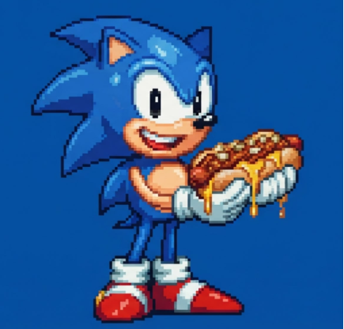

DESCRIÇÃO
Sonic the Hedgehog - Chili Dog
-> é a comida favorita absoluta do Sonic the Hedgehog. O ouriço azul é completamente obcecado por
esse lanche em praticamente todas as mídias da franquia (jogos, animações e quadrinhos).
Primeira aparição: o Chili Dog está presente em diversas mídias da franquia, sendo sua primeira
aparição na série animada Adventures of Sonic the Hedgehog.
INGREDIENTES
Para o chili (molho de carne):
- 500g de carne moída (patinho ou acém)
- 1/2 cebola picada
- 2 dentes de alho picados
- 1 xícara (chá) de molho de tomate
- 1 colher (sopa) de chili em pó (ou uma mistura de páprica picante, cominho e pimenta caiena)
- 1/2 xícara (chá) de água
- Sal e pimenta-do-reino a gosto
- Opcional: 1 xícara de feijão vermelho cozido e escorrido, se quiser a versão tradicional americana
Para a montagem:
- Pão de cachorro-quente
- Salsichas
- Queijo cheddar ralado
- Cebola roxa picada (opcional)
MODO DE PREPARO
- Fazer o chili: Em uma panela com um fio de óleo, refogue a cebola e o alho até dourarem. Adicione a carne moída e cozinhe até que ela perca a cor rosada, desfazendo os pedaços com a colher para ficar bem soltinha.
- Temperar e apurar: Adicione o chili em pó (ou as especiarias), o sal e a pimenta. Despeje o molho de tomate e a água (e o feijão, se for usar). Misture bem, tampe a panela e deixe cozinhar em fogo baixo por cerca de 15 a 20 minutos, mexendo de vez em quando, até o molho encorpar e ficar bem grosso (não pode ficar muito líquido para não encharcar o pão).
- Preparar as salsichas: Enquanto o chili apura, ferva as salsichas em água por alguns minutos e escorra.
- Montar o Chili Dog do Sonic: Abra o pão de cachorro-quente, coloque a salsicha cozida e, por cima dela, coloque colheradas generosas do chili de carne ainda bem quente.
- Finalizar: Salpique bastante queijo cheddar ralado por cima (o calor do chili vai derreter o queijo) e finalize com a cebola roxa picada se quiser um toque crocante.